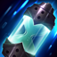
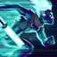
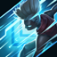

PUBLICIDAD
- 
- 
- 
Campanas Ancestrales:
Los ataques y hechizos ofensivos de Ekko van acumulando Resonancia sobre sus enemigos. Cada tres ataques contra un mismo enemigo se activa su pasiva, que daña y ralentiza a la unidad afectada. Además, si esta es un campeón enemigo, Ekko gana una potente mejora de Velocidad de Movimiento.
Cadenas Cósmicas:
Ekko lanza un dispositivo que daña a todos los enemigos situados en su trayectoria. Al llegar a su máxima distancia o golpear a un campeón rival, el dispositivo se expande y crea un campo que ralentiza a todas las unidades enemigas y neutrales. Al cabo de un momento, vuelve a contraerse y regresa rápidamente con Ekko. Todas las unidades enemigas situadas en su camino reciben daño adicional.
Santuario del Guardián:
Pasiva: Los ataques básicos de Ekko causan daño adicional a los objetivos con poca Vida.
Activa: Ekko abre una grieta en el tiempo y crea una copia de sí mismo procedente de una realidad alternativa, que lanza un dispositivo hacia un punto. Pasado un rato, el dispositivo se expande y crea una amplia zona de ralentización. Si Ekko entra en la esfera la hace explotar, lo que además de proporcionarle un escudo, aturde a todos los enemigos situados en su interior.
Periplo Mágico
Ekko corre una distancia fija hacia la ubicación elegida. Al finalizar esta carrera recibe una importante bonificación de alcance para su siguiente ataque básico y se desplaza hasta el objetivo, al que daña y aplica efectos de impacto y de hechizo.
Periplo Mágico
Ekko "rebobina" el tiempo, lo que significa que durante unos instantes no se le puede atacar y se vuelve invulnerable. A continuación, reaparece en el mismo sitio donde estaba hace unos segundos. Al hacerlo recobra una parte de la Vida que había perdido en esos segundos e inflige gran cantidad de daño a todos los enemigos cercanos.
Así quedaría más o menos :)
NOVEDADES
GUIAS